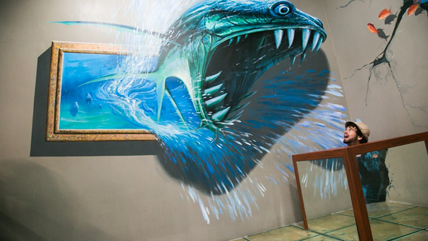

Art In Island
Art in Island receives tourists round the year from all corners of the world and is one of the best places to visit in Quezon City Popularly known as the world’s first selfie museum.

Quezon City

Are you planning your next trip to Quezon City in the Philippines? You should be aware of this fact that it once used to serve as the capital city of the Philippines during the period from 1948-1976. There are many places to visit in Quezon City. Their interesting architecture keeps you hooked. With a myriad of tourist attractions, this city receives both domestic as well as countless international tourists throughout the year. Besides its popular attractions, delicious dishes prepared in the finest restaurants here are simply delightful in their taste, freshness and flavors.
As you know that Quezon City was the capital of the Philippines for almost 28 years before Manila, thus it still boasts of several historical places to visit. In addition, it has exceptional road connectivity as well. Below are some of the best places to visit in Quezon City for a once in a lifetime experience.
Art in Island receives tourists round the year from all corners of the world and is one of the best places to visit in Quezon City Popularly known as the world’s first selfie museum.
Your trip to Quezon City in the Philippines will remain incomplete if you don’t discover Eastwood City. This 17 hectares commercial and residential town is home to several towers
One of the most popular art galleries of the Philippines, Sining Kamalig appeals to each and every visitor. Although it is not that big, it is full of things which are going to entertain, stun and inspire you.

Hiking, mountain biking, horseback riding, rappelling, zip-lining, and fishing are some of the most popular activities which tourists can involve in the La Mesa Eco Park in the Philippines
The Quezon Memorial Circle is a National Park in the Philippines. Housing a small amusement park for all adventure and thrill-seekers, you can plan a day outing to this spot.
One of the most popular shopping mall complexes in the city, Greenhills Shopping Center is worth a trip. The locals and tourists visit this mall for shopping, dining, and rejuvenation through the beauty & wellness services.
The second largest shopping mall in the Philippines and the 5th largest in the world, SM Megamall is worth a trip It is a perfect destination for shopaholics. With an area of approximately 10 hectares,
Maginhawa Food Park is home to several world-class restaurants and eateries that help the tourists and locals to taste the hand-prepared food made from the local and seasonal ingredients.
If you are looking for a place to spend some moments in solitude, then Mt. Carmel Shrine could be a perfect destination for you. This old church is magnificent, and it also helps you to feel a connection with Almighty God.

Known as The Big Dome, The Smart Araneta Coliseum is an indoor multi-purpose sports area in the Philippines. Being one of the largest indoor areas in Asia today, it offers you the facility of playing many games at once.